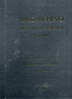

Liliana Pernicheva-Perets, Malgorzata Grebska-Kulow and Ilija Kulov
Balgarchevo: The Prehistoric Settlement Volume I
Sofia: Craft House Bulgaria, 2011
|  | The prehistoric settlement of Balgarchevo is situated in the area of Kasi bania [bath], immediately at the northeast end of the village of Balgarchevo, which lies 10 km norhtwestwards from the city of Blagoevgrad. It is on a middle river terrace on the right bank of the Struma River. There is an excellent visibility over the valley of the river both to the northern and southern direction. Having in mind the fact that Struma used to be one of the most important natural axes connecting the northern Mediterranean with the Central Balkan Peninsula throughout the whole prehistoric period, this particular location of the prehistoric settlement seems to have been not only naturally-determined, but also strategically-conditioned. The leveled terrace gave people a good opportunity for building. Both the neighboring and further land were suitable for agriculture. At the same time, the various landscapes with their hill outskirts of the Vlahina Mountain to the west provided marvellous conditions for hunting and stock-breeding. The precipitous slope of the river terrace of Struma limited the settlement to the east, while to the south it was restricted by the steep slope going down to the Lisiyska River, a right tributary of Struma. In this way the prehistoric settlement was, to a certain extent, naturally protected from two sides and it hand all the necessary conditions for living-agriculture, stock-breeding, hunting and fishing. One of the new natural passages connecting the Struma River Valley with the Vardar River Valley is located near the settlement. The settlement is discovered at the end of 60th years of 20th century by Dimka Stoianova-Serafimova, archeologist from the Regional Museum of History (RMH) in Blagoevgrad. In 1974 Liliana Pernicheva from National Archaeological Institute with Museum in Sofia and Tsvetana Angelova from Regional Museum of History in Blagoevgrad made the first sounding. The results evoked big interest among the specialists. Long-termed archaeological excavations started in 1977 and continued with certain interruptions until 1987. The big amount of the investigated material and its importance determined its arrangement into two volumes. The first volume consists of the geographical and archaeological characterization of the region, stratigraphy, architecture, a full characterization of the ceramics following the period, the development of the prehistoric cultures and an appendix with chemical and petrographical research of selected ceramic fragments completed in the Chemical and Mineralogical Institute of the University of Mining and Geology in Sofia. The second volume will contain cult plastics, stone, flint and bone tools, adornments, interdisciplinary researches (paleobotany, paleontology and anthropology) and a chapter on chronology and periodization. |
{kind=link}
| Back to Publications | Title Page |
Table of Contents |
{kind=link}